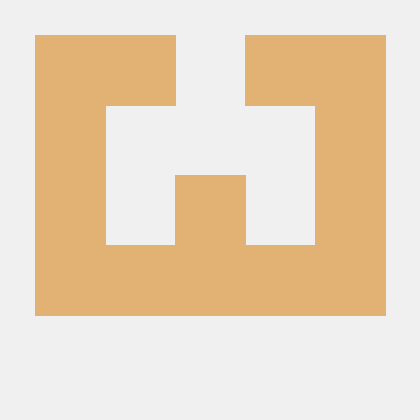

Perkenalkan Nama Saya Muhammad Riduwan Khafidi Bisa di panggil ridwan,, atau whatever you want.
umur saya 18 tahun,, saya tinggal di Kecamatan Batuaji,, kelurahan Tanjung Uncang,, Perumahan Permata Laguna Block A8 No 11. Saya lahir di jember bertepatan pada tanggal 15 september 2007,
saya berkuliah di Politeknik negeri batam,, juruan informatika, dan saya prodi teknologi rekayasa perangkay lunak, dan saya masih semester 1,
nah jadi dulu sebelum saya masuk poltek saya bersekolah di SMKN 5 BATAM,, dan saya mengambil juruan TITL (Teknik Instalasi Tenaga Listrik). nah jadi kenapa saya ambil trpl di perkuliahan, karna pada saat atau sebeleum saya masuk smk saya maish belum tertarik dnegan computer, tetapi suatu hari saya merasa bosan dan saya mencari kesibukan dan dari situlah saya mulai suka namanya percofing codignan
untuk hobi sebenernya saya cuman sedikt
nah hobi saya cuman 2 itu aja kalai keahliaan saya juga tidak banyak
saya masih dalam tahap proses belajar tapi ada sedikit yang saya tau tentang dunia programan.
seperti tools tools biar enak development kyak
kalian juga bisa melihat saya di github atau pun di portofolio pribadi syaa di
atau bisa contac email saya ke mriduwankhafidi@proton.me atau ke mroczect@proton.me
My Profile
